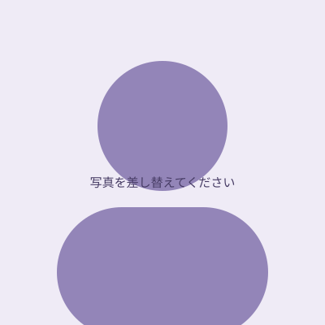

たった5時間で発音の基礎が身につく、日本人学習者専用の録画講座
一度購入すれば永久視聴でき、好きな時間に何度でも復習できます。
大学院で言語学を研究していた中国語母語話者チームが開発。
日本語との違いを理解しながら、正しい発音を身につけます。
毎回の学習後、専門講師が1対1で発音をチェック。具体的にフィードバックします。
全10回・約5時間の集中カリキュラム。効率よく発音の土台を身につけます。
通常価格14,800円の講座を、クーポン適用後は9,800円で受講できます。

全10回の録画講座でピンインを体系的に学習。レッスン後には専門講師が1対1で発音をサポートします。
| 回数 | テーマ | 学習内容 |
|---|---|---|
| 第一回 | ピンインの基本と単母音 | ピンインの構成、声調、単母音a・o・e/i・u・ü、半母音y・wを学びます。 |
| 第二回 | 単母音の復習と基本子音① | 単母音を復習し、唇音b・p・m・f、舌根音g・k・hの発音を学びます。 |
| 第三回 | 基本子音② | 舌尖音d・t・n・l、舌面音j・q・xの発音を学びます。 |
| 第四回 | 日本人がつまずきやすい子音 | 舌歯音z・c・s、そり舌音zh・ch・sh・rを重点的に学びます。 |
| 第五回 | 子音・単母音の復習と複合母音① | 子音と単母音を復習し、複合母音ao・ai・ou、軽声を学びます。 |
| 第六回 | （記入待ち） | ★ここに第六回の学習内容を追加してください |
| 第七回 | （記入待ち） | ★ここに第七回の学習内容を追加してください |
| 第八回 | （記入待ち） | ★ここに第八回の学習内容を追加してください |
| 第九回 | （記入待ち） | ★ここに第九回の学習内容を追加してください |
| 第十回 | （記入待ち） | ★ここに第十回の学習内容を追加してください |

大学院言語学専攻・6年間の中国語講師経験・ピンイン教育専門
中国新疆ウイグル自治区出身。日本の大学院で音声学について研究してきました。中国語教育において6年以上の指導経験があり、特に発音指導とピンイン教育を専門としています。
「中国語の発音が難しい」「4つの声調が覚えられない」と感じている方もご安心ください。口の形・舌の位置・声の出し方を細かく説明し、楽しく練習できるよう工夫しています。専門的な内容も、無理なく続けられるように計画的にサポートします。
他の講師も見る
※ 期間限定価格は、キャンペーン終了次第終了となります。
※ クーポン適用には、担当スタッフへのクーポンコード提示が必要です。
言語学に基づいた専門的な発音指導で、日本人初心者に合った中国語学習を提供します。マンツーマンレッスンや他の講座については、公式サイトをご覧ください。
公式サイトを見る